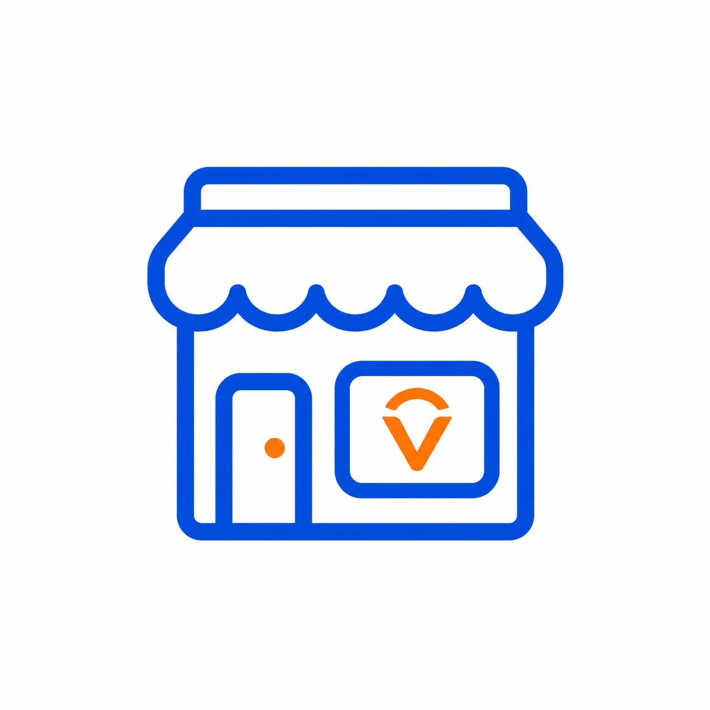
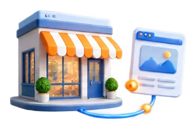
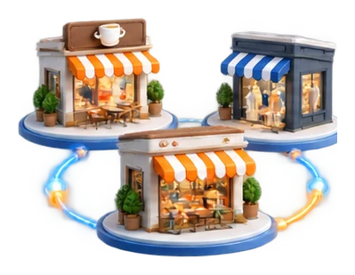
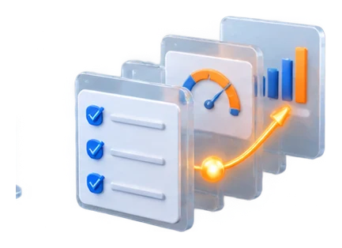
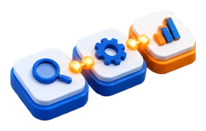

01 · InformaciónAzul
Azul profundo
Navegación y superficies de información.
Bisel fríoTransparencia media
Material · luz · profundidad
Una identidad compartida con profundidad selectiva: escenas protagonistas, tarjetas de lectura tranquila y controles sólidos. Oscuro principal, claro alternativo y componentes reales.

Identidad oficialVico · activo verificadoLa forma conserva el volumen.
El color expresa la intención.
El contenido mantiene el control.
01 / Sistema de superficies
Espesor, bisel, transparencia, refracción y sombra siguen una sola regla. Cada acabado mantiene esa geometría y cambia solo la luz y el tono.
Navegación y superficies de información.
Lectura, formularios y superficies claras.
Acciones principales y acentos de Vecidya.
Avisos y elementos que requieren atención.
Éxito, confirmación y validación.
Error, riesgo y acciones destructivas.
La materia no depende del tono. El borde refracta la luz, el canto inferior aporta espesor y la sombra fija cada superficie al plano.
02 / Componentes en uso
Botones, paneles y pestañas son controles reales: reciben foco, cambian de estado y mantienen el contenido por encima del efecto.
Acciones
El bisel ilumina el borde; el estado y el nombre siguen legibles sin depender del color.
Contenido
Nombre, categoría y estado se ordenan sobre el cristal.
Navegación local
Una capa de apoyo mantiene el material separado de los datos.
Los cambios se distinguen por fecha y estado, sin usar el color como única señal.
La superficie conserva borde, reflejo y elevación en todas sus variantes.
Jerarquía y elevación
El valor pertenece a una muestra visual; no representa datos de la plataforma.
Contenido progresivo
En navegación y acciones. Formularios, tablas y textos largos usan vidrio más sobrio para conservar contraste.
El control nativo abre y cierra sin dependencias ni JavaScript adicional.
03 / Entrada de datos
Los controles reciben una capa de vidrio más sobria, con etiquetas visibles, foco claro y validación local.
Estados de campo
Contraste antes que destello. En zonas densas, la translucidez baja y el texto toma el primer plano.
04 / Datos y estados
La misma estructura funciona para tablas, métricas y mensajes. Cada estado combina tono, etiqueta y contexto.
Tabla de referencia
| Tono | Uso previsto | Texto | Estado |
|---|---|---|---|
| Azul profundo | Navegación e información | Claro | Disponible |
| Blanco hielo | Lectura y formularios | Oscuro | Disponible |
| Naranja solar | Acción y énfasis | Oscuro | En revisión |
| Verde claro | Confirmación | Claro | Disponible |
Feedback
05 / Biblioteca visual
Fondos, marca, iconos, ilustraciones, guías y catálogo usan las mismas superficies Crystal. La identidad de cada imagen se mantiene como archivo separado.
No hay activos con ese término. Prueba con “diagnóstico”, “servicio” o “interfaz”.
Inventario completo de public/assets/, con fuentes originales separadas. Once iconos tienen una vista Crystal PNG propuesta; los originales permanecen intactos.
06b / Vico · identidad y recursos oficiales
Selecciona la imagen original de Vico y revisa su encuadre en fondo oscuro, claro o transparente. El visor no modifica las imágenes ni publica cambios en Vecidya.
Las diez ilustraciones del personaje se enlazan al catálogo oficial. Compara fondo, tamaño, posición y escena complementaria antes de seleccionar el recurso para una página o enviar instrucciones a tus agentes.
Presentación de Vecidya · Inicio · original WebP 1024 × 1536 px. Mantener su proporción y dejar espacio para título y botones.
Abrir imagen originalLa escena de fondo es una referencia de composición. El texto y los controles de la web siempre deben conservarse fuera de la imagen.
Selecciona «Analizar píxeles alfa» para evaluar esta imagen.
Blanco: píxeles opacos. Gris: semitransparencias. Negro: transparencia total. La medición es orientativa y no elimina reflejos ni certifica la calidad artística.
Este ajuste solo elimina píxeles casi transparentes. No repara bandas opacas ni reemplaza el original.
Si los controles no se cargan, consulta las diez imágenes oficiales mediante la categoría Vico del catálogo completo.
Regla: Vico es el personaje de marca; conservar identidad, silueta y proporciones. No convertir fotografías del negocio, estados comerciales ni permisos en imágenes del personaje. Las piezas de Vico corresponden a Vecidya, no son recursos de marca predeterminados de MiniWeb de terceros.
06 / Escenas ambientales
Los fondos definen el ambiente; las ilustraciones oficiales aportan contexto; las tarjetas reales se componen encima, a su escala.

La luz guía el foco y deja aire para el contenido real.

Las rutas de luz vinculan negocios sin ocultar su contenido.

El vidrio baja de intensidad cuando aumentan los datos.

La jerarquía separa contexto, estructura y acción.
Estado de la iteración. La biblioteca es local y de revisión visual. No migra estilos, rutas, formularios ni diagnósticos de la plataforma.
08 / Manual de aplicación · R1
Esta sección explica cómo interpretar una necesidad, elegir un material y aplicar los patrones Crystal Depth sin alterar funcionalidad, permisos ni identidad de marca.
Usar: portada, escena narrativa, CTA protagonista.
Evitar: tablas, formularios o bloques extensos de lectura.
.vx-r1-focal
Usar: tarjetas, navegación, paneles de contexto.
Evitar: poner texto largo sobre imagen transparente.
.vx-r1-quiet
Usar: formularios, tablas, diagnóstico, editor y Admin.
Evitar: brillo que compita con datos o acciones.
.vx-r1-solid
Enrutador de decisiones · orientación local
Selecciona el contexto. El resultado describe el patrón preferido, no genera código ni modifica la plataforma.
Material recomendadoCrystal Focal + Quiet
Escenahome-scene
Regla críticaMantén texto y acciones en superficies contrastadas; Vico es un elemento independiente.
Disponible: sitio público, escena y material de referencia.
Contrato legible por máquinas: pattern-registry.json. Guía de agentes: INTEGRACION.md.
El agente líder asigna la tarea; cada colaborador recibe solo las reglas pertinentes. El borrador puede revisarse antes de copiarlo.
Preparando el borrador de referencia…
La copia solo contiene reglas de diseño, nunca datos del cliente.
Plantillas profesionales, identidad del negocio y contenido editable. No es una web deliberadamente inferior.
Hereda Cuadra. Composiciones y llamadas a la acción comerciales, sujetas al CRM efectivamente configurado.
Hereda Barrio. Composiciones multiproceso cuando existan integraciones reales y permisos efectivos.
Regla contractual: las diferencias visuales propuestas no modifican licencias actuales ni habilitan funciones nuevas por sí solas.
Verificar 320–1920 px · contraste de texto 4,5:1 y texto grande 3:1 sobre fondos reales · foco visible · controles táctiles de 44 px cuando aplique · teclado · movimiento reducido · prueba sin blur · assets oficiales · permisos y comportamientos intactos.
R1 es una dirección artística implementada en este laboratorio, no una certificación WCAG ni autorización para migrar o desplegar el diseño en la aplicación real.
09 / Movimiento y transiciones · R1.1
Animaciones funcionales y ambientales para dar continuidad entre páginas, secciones y componentes. El movimiento aporta orientación, no sustituye el contenido.
Usa movimiento protagonista en escenas de portada, microinteracciones cortas en botones y tarjetas, y transiciones discretas cuando una persona cambia de sección. Las pantallas de datos y el editor MiniWeb permanecen estables. Todos los ejemplos respetan movimiento reducido y pueden pausarse.
La nueva sección entra una vez al hacerse visible. Sin ocultar contenido cuando no hay JavaScript.
section-reveal · 480 ms
Botón, pestaña o tarjeta muestra una respuesta breve a hover, foco o selección, sin animar formularios.
ui-feedback · 150–260 ms
Órbitas y luz respirando lentamente detrás de la escena; nunca detrás de tablas densas.
ambient-drift · 9–14 s
Desplazamiento entre secciones con anclas y lectura continua. En React, transiciones de ruta solo opt-in.
section-navigation · nativa
Escena L0–L5 · demostración
Los planos de luz y cristal se mueven suavemente. El texto y los controles se mantienen inmóviles, con contraste y foco propios.
Microinteracciones de 150–260 ms. Animar transform y opacity; conservar siempre el foco y los estados de carga.
Entrada de 340–480 ms, una sola vez. Nunca ocultar respuestas ni navegación esperando un efecto.
Movimiento lento entre 9–14 s con pausa disponible. En móvil, reduce capas y evita órbitas permanentes.
Para los agentes: consulta pattern-registry.json y la guía de integración. Las transiciones entre rutas de la plataforma son una especificación para adopción futura, no una migración realizada.
10 / Composiciones · páginas y contexto
Las mismas reglas de Vecidya resuelven portadas, descubrimiento, lectura y edición. Cambia de escena para comprobar cómo varía el material sin perder identidad.
Una demostración de dirección artística, no cuatro rutas publicadas. Con JavaScript, los botones presentan la transición entre vistas; sin JavaScript, las cuatro composiciones siguen visibles para lectura y consulta.
Una portada con narrativa visual, identidad oficial y llamadas a la acción claras. La escena acompaña; el contenido conserva el protagonismo.
Consultar patrónComposición para buscar y explorar negocios sin inventar resultados ni convertir las tarjetas en fondos decorativos.
Consultar patrónEscena editorial en segundo plano, jerarquía de títulos y textos largos sobre superficies estables, sin reflejos que dificulten la lectura.
Consultar patrónVista conceptual del sistema MiniWeb. Cuadra, Barrio y Ciudad comparten calidad; las composiciones y funciones avanzan solo cuando sus permisos e integraciones existen.
Consultar patrónAmbientación L0, escena L1, estructura L2, superficie L3 y contenido L4. Vico L5 solo cuando aporta significado.
Transición breve de página simulada; sin autoplay obligatorio ni bloqueo de interacción. Respeta movimiento reducido.
Una sola identidad para todos los niveles. El acceso a funciones depende del contrato de producto real, nunca del mockup.
Explora colores, tipografías, tamaños, posición, estructura y márgenes con una página ficticia. La calidad básica es igual en Cuadra, Barrio y Ciudad; cada composición cambia el modo de presentar los contenidos.
Modifica un control para actualizar la vista; ningún cambio se guarda.
Un estudio ficticio que transforma ideas en soluciones visuales. Cambia el diseño a tu gusto sin sacrificar lectura ni funcionalidad.
Consultar guíaUna imagen reconocible y coherente.
Mensajes fáciles de entender.
Un recorrido simple para contactar.
Ejemplo local del laboratorio. Base, Pro y Premium aquí son composiciones conceptuales, no derechos activos ni plantillas publicables. El archivo copiado es una orientación de diseño, no un formato de configuración del editor de Vecidya.
Consulta el contrato de escenas y el protocolo para agentes antes de trasladar un patrón a React. Esta biblioteca no implementa routing real ni edita un MiniWeb.
11 / Interacciones reales · guía R1.3
Mensajes comprensibles, superficies estables y un siguiente paso visible. Un efecto no puede reemplazar una operación comprobada.
Elige un estado para consultar el patrón visual y la regla de implementación que debe aplicar el agente. Esta simulación no ejecuta búsquedas, guarda formularios ni confirma cambios reales.
Selecciona la situación que necesitas representar en una pantalla de Vecidya.
Demostración local de UI. Una confirmación real exige evidencia del backend o del servicio externo.
La acción está disponible. La persona sabe qué ocurrirá antes de continuar.
Estado inicial: etiqueta precisa, acción identificable y texto de apoyo cuando sea necesario.Confirmar solo después de respuesta real. Bloquear duplicados durante el envío; conservar la entrada al fallar.
Un estado vacío ofrece filtros o salida útil. No inventa negocios, consultas ni cifras.
Estados con texto permanente, contraste sólido y cambio breve; sin color como única señal ni animación obligatoria.
Para los agentes: consultar interactionRecipes y guía de integración. Este laboratorio no envía formularios ni modifica permisos, licencias o CRM.
12 / Lenguaje compartido · R1.5
Crystal Depth propone la dirección visual, pero el frontend React de Vecidya tiene los tokens y componentes que deben gobernar su implementación.
Antes de diseñar una nueva pantalla, el agente consulta la intención, determina el material y busca el componente existente. Nunca copia indiscriminadamente las clases de la biblioteca a la plataforma.
El mapa se genera a partir de pattern-registry.json. Si no hay JavaScript, consulta la guía de integración.
| Función | Token React | Valor actual | Regla de adopción |
|---|
Fuentes: guía de agentes, contrato estructurado y código real de vecidya-platform/app/components/ y vecidya-platform/app/styles/. No modificar el tema, los permisos, los flujos de MiniWeb ni el CRM por interpretar una muestra.